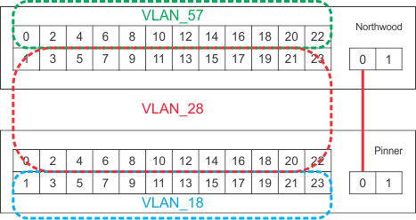

Sad to see the end of our two weeks at the Summer Institute, but I enjoyed my time here. Our presentation is a available
below in a couple of formats. The video only option contains only the original video where the slides might be hard to read.
The video with screen option contains the original slides next to the video. Both video options are avalible below. If you
would like to view our presentation separately, it is avalible
here.
We have come to the end of my posts about Ohio Supercomputer's Summer Institute. During these two weeks, I took many pictures
and posted them here, but this page became too long to keep posting all of them. If you would like to see all of the pictures
I took, they are avalible
herewith captions. The Supercomputer Center also took great photos and they are avalible here.
Today we visited OSU's Center for Automotive Research. I did not realize that OSU designed and raced many different types of
vehicles. We saw their Formula SAE car, the Bullet Car, the EcoCar, and more. I personallythink the EcoCar was the most interesting.
They used a Cheverolet chasis and used a Honda engine that they modified to use E-85.
We also focused on finishing our presentation. While our network is not fully operational, the focus of our project was
not on the final network working, it was on learning how they work and the protocals behing them. I can not wait to present
our project.
6-24-2015
Today we focused on finalizing our "project" and starting on our presentation. I do applogize that this post is short, but
much of what we did in our presentation.
6-23-2015
It was another day of breaking then fixing things. We continued learning about router protocols, connecting the eight routers
in odd fashions to better understand how connections work. For example, we have been focusing on creating complex networks,
not exactly efficient networks. We also have been discussing how we will present our project. I look forward to our presentation
and can't wait to show what we have learned.
6-22-2015
Let me start off by first saying that -30°F is very cold. But more about that in a moment...
Today, we continued with our networking project. We have so many wires on the table, it isn't funny anymore. If someone
brought in a pair of scissors and cut even one wire, we would be spending the next ten minutes figuring out which one was
cut.
After some minor technical difficulties in our configurations, we visited the Byrd Polar and Climate Research Center to
learn about the types of projects they are working on. I did not know that this research facility is one of the largest users
of the Ohio Supercomputer Center. The Byrd Polar and Climate Research Center has been developing a model for the weather
patterns in the polar regions for pilots to use to know their landing conditions. An example of one of their live models
is accessible
here.
After an introduction to the models, we saw their massive collection of rocks from the polar regions and entered the room
where they store ice core samples. The picture below of the thermometer is the temperature in the room where they cut the samples,
not the temperature of the storage room. The storage room was about -30°F when we entered. And I thought waiting at the
bus stop before school was cold during the winter...
6-19-2015
We finished our training for creating and connecting switches. After saving the configuration we created for connecting
two switches together, we started wiring all of our switches together as shown below.
After working on our new network, we visited the State of Ohio Computer Center where the supercomputers are housed. We were
able to see all three of the current supercomputers; Glenn, Ruby, and Oakley. Of the three supercomputers, Glenn is the oldest
and will be replaced soon. Glenn is significantly different than the other two. In order to cool the supercomputers,
Ruby and Oakley trap the heat in-between the two rows and cools from the outside, but Glenn traps cool air on the inside
and pushes the heat out. Glenn also has a slightly different set of resources on the inside. While Glenn contains only CPUs
(Central Processing Unit), Ruby and Oakley also contain GPUs (Graphic Processing Unit) for even faster computing for certain
types of jobs. Below is a labeled picture of the inside of one Glenn node.
6-18-2015
Today, we toured one of OARNet's data centers in Columbus. I was shocked by the number of wires everywhere and that the
center is shared between many other companies. The amount of data passed though OARNet and power used is staggering. After
a tour of OARNet, we continued learning how to connect multiple switches together as shown below.

I have been holding off on posting about what we do at the dorms until now, but I thought now would be a great time to talk
about it here. We have played so many games at the dorms, ranging anywhere from poker, played with goldfish and M&Ms
at chips, to Apples to Apples. We also end up spending a significant amount of time talking to the other groups about what
we did in our projects.
Also, there are massive amounts of food surrounding me even as I am writing this. As lunch is provided for us, our meal
cards have $20 left that we should use before the end of the night. As we do not want to waste this money, we end up getting
a lot of snacks and beverages:
Today, we toured the High Energy Density Research Lab where they fire a very powerful laser at a small piece of metal to
observe the protons emitted. To demonstrate how powerful these lasers are and show how they test the accuracy of the
lasers, they placed a piece of burn paper in part of the laser amplification system. Below is a video of this demonstation.
Others had a little more fun with their copy of the video...
Below is a picture of what this lazer did to the back side of the paper.
After our tour, we were introduced to the Juniper Networking Switches by our intructor, Mr. John Graham. After booting up the machines, which were louder than we expected,
we learned how to use the command line to access the switches. Our group then spent the remainder of the day investigation networking concepts.
6-16-2015
I am now a part of the networking project group. After an introduction to MATLAB, an interesting and unique type of programming
language (see example MATLAB creation by Vilas Winstein below), we started on our project training. During our training
time, we discussed the binary numbering system. We also discussed how to convert from binary to hexadecimal in order to determine
why IP addresses are written the way they are. Tomorrow, we will investigate how networks operate.
Another exciting day at the Summer Institute. To start the day, we had an introduction to the Ohio Supercomputer Center
and the Supercomputers they utilize. Supercomputers are defined as computers that are exponentially faster than computers
used at home. Initially, I thought that these supercomputers are one large computer with many processors, but they are actually
many smaller nodes with fast interconnects. These nodes can communicate with the other nodes via a fast, low latency connection
like Ethernet. We also discussed OARNet, originally created to connect researchers to the Supercomputer via phone lines.
Currently, the system is used to connect many of the universities, schools, and public broadcasting networks, for example,
our local PBS affiliates, with high speed internet. This system offers speeds about 5000 times faster than your home internet
and most of the traffic that passes through is, not surprisingly, Netflix. I would be curious to know if the Hilliard City
School District uses OARNet for their Internet.
We also toured the Ohio Supercomputer Center, where we were also shown some of the projects they have been working on. One
of these projects was a simulator, using an Oculus Rift, of a home where one had to identify some of the hazards that medical
staff might encounter when treating a patent at their home. Below is a video of myself while wearing this simulator. Sadly,
I do not have a video of the environment I was in.
In the last half of the day, we discussed the five projects offered. I hope to be a part of the Networking Design and Engineering
project where we will create our own miniature version of OARNet. Afterwards, we were given an introduction to UNIX, which,
while I knew a lot about, I did learn some new topics.
I am very excited for tomorrow where we will have an introduction to MATLAB, then start on our training for our project.
6-14-2015
Welcome! First post on my blog here, and first day at the Ohio Supercomputer Center's Summer Institute. Today was just a check-in and get to know everyone, but I am really excited for the rest of the next two weeks. We will
be learning about all sorts of topics, ranging from Unix to MATLAB, and visiting many of the buildings around the Ohio State
Campus, including a tour of the High Energy Density Physics Area. Tomorrow, we will be introduced to the five projects we
will choose from:
Lab-on-a-chip
Nanofluidics, Image Processing, Cancer Cell Migration, Invasion and Metastasis, Networking Design and Engineering, and The Physics of Addicting Video
Games.
If you would like to view the presentation we were given at the beginning of camp, it is avalible here.